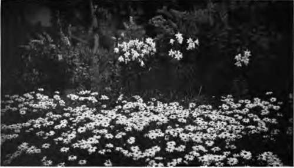

Chapter XI. The Special Value Of Perennials
Description
This section is from the book "Flower Gardening", by H. S. Adams. Also available from Amazon: Flower gardening.
Chapter XI. The Special Value Of Perennials
All other plants might disappear and the perennials would give the garden supreme loveliness— expressed in hundreds upon hundreds of individual forms. No one knows how many kinds are in cultivation; if any calculation were made it would be good for only a day, so rapidly are species emerging from the realm of botany to the garden and new varieties appearing on the scene. A glance at a British list of iris, primula or campanula species alone is enough to stagger one.
The special value of perennials, however, lies not more in the marvelous variety of form and color that incalculable numerousness affords than in the distribution of their blooming season through the greater part of the year. Excluding all of the bulbs, which it is the trade custom to catalogue under a separate head, the herbaceous perennials have a range of bloom that has not begun to be realized by amateurs—as the meagre representation in the average garden, in both spring and autumn, demonstrates clearly enough. Without any coddling at all, they can be made to furnish an uninterrupted stretch of bloom for approximately nine months of the year; a thin showing at both ends, it is true, but neither quantity nor variety is everything in the flower garden. With coddling, it is possible to extend this stretch through December, January and February and thus make a complete circle of the year.
Perennials as a class bloom only once a year. Most adhere to this rule with absolute rigidity; the exceptions usually are early spring flowers that a mild autumn causes to bloom sparsely a few months ahead of time or summer flowers that have a second spurt, often because the first crop of seed has not been allowed to mature. Nor is the average period of perfection of bloom long; sometimes it is lamentably brief and rarely is a perennial so prodigal as the plumy bleeding heart (Dicentra formosa), which has blossoms from spring to autumn.
The actual time of bloom is fixed only so far as habitat—the place where the plant is native— is concerned. Even then the season, especially an early or late spring, will shift normality a little one way or the other. In gardens a similar inexactitude of time, but more of it, is to be noted. Comparatively few perennials are cultivated in regions where they grow naturally. Not infrequently there is a marked change of altitude; thus a primula native to the mountainous heights of Switzerland will bloom earlier in a New York garden, because in the latter 'he snow disappears earlier.
Again climate differences are such that garden normality is by no means the same everywhere in spring and early summer; the German iris is likely to be in full bloom in northern Virginia the last week in April while in southern New England it is not to be looked for until May.
In the matter of hardiness—the withstanding of the winter's cold without artificial protection— there is no fixed rule once a perennial leaves its habitat. Taken by and large, perennials are wonderfully adaptive in this respect, often enduring patiently more cold, or more heat, than at home, and quite as often giving no sign of minding at all a drop of a mile or more to about sea level. But with a fairly large number—these include, unfortunately, some of the most charming species —the degree of hardiness positively refuses to budge much to accommodate the grower of flowers. Such perennials must either have protection that amounts to coddling or, perhaps, be taken up every year and stored all winter where they will not freeze. They it is which are largely responsible for making certain features of hardy gardens of southern Britain the despair of northeastern America—where winters are colder and summers hotter and drier.
Where a plant's local hardiness has not been tested by cultivation it is a good plan to look it up in an authoritative reference book before deciding about planting. First, see how closely native and proposed conditions tally. Then, if the book does not give the result of tests in the United States, ascertain whether the plant is catalogued by reputable American houses. The perennials that they offer are a very much abridged list as compared with British ones and generally they are either reliably hardy as far North as Boston, or relative tenderness is plainly indicated.
"The wonderful big notes are struck by solid effects such as are to be found in nature"
All of these things should be clearly understood before any definite attempt to grow perennials is made. Such understanding is absolutely essential for determining the special value of perennials not merely to the garden world but narrowed down to the province of your particular garden. What you want to know above all is the worth of perennials to you as working material.
This enables the choice from the embarrasingly large list to be made with the intelligence that prevents useless waste of time and money in the endeavor to do what is not worth while in an in-dividual case.
For the great pleasure in growing perennials is to devote time and money to those that are distinctly worth while in one's own case. There is a host of them available after the most ruthless process of rejection that any one of a thousand circumstances would necessitate. The sacrifice will never be so great that the true philosopher will not be able to find solace in the garden of a differently situated neighbor or friend, or a public collection of plants.
In making a list of available? for final choice take, say, one or two hundred small cards and from catalogues and garden books pick out the same number of plants of tested hardiness that seem best suited to the required purpose. Write at the top of each card both the botanical and the common name. Then add, on separate lines, the time of blooming, as nearly as you can ascertain for your section of the country, and its average duration, the height of foliage as well as bloom wherever possible; the general character of the plant, whether creeping, sprawling, bushy or markedly erect and, finally, the color. It is best thus to segregate the color memorandum, because this should include not only the color, or range of colors, of the blossoms, but like notes as to the foliage. Make a clear differentiation of the many foliage shades and if the leaves are evergreen say so. It is well also to keep in mind, as to color, that the matter of blossoms and leaves being loose or compact may make a material difference in their use for garden pictures.
Continue to:
- prev: Chapter X. Why A Hardy Garden Is Best
- Table of Contents
- next: The Special Value Of Perennials. Part 2